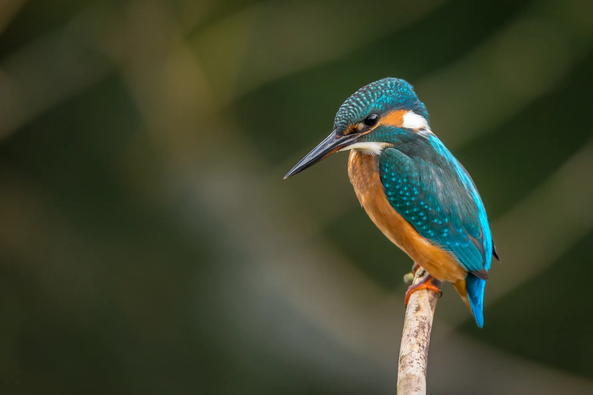
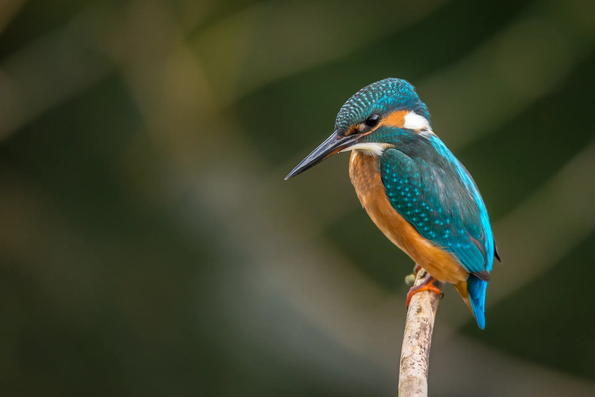

I am 33 years old. In 2021, I completed the QA Manual course. After that, I found my first job where I have been working as a QA for almost three years. In the last six months, I have been combining it with automation.
 
